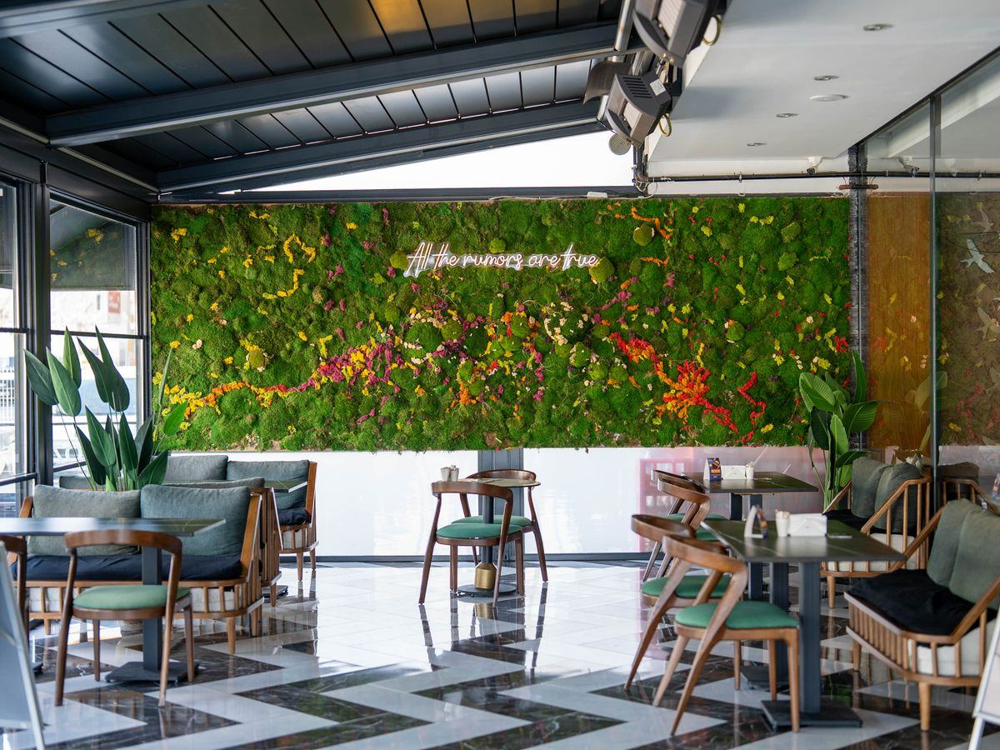

Verdalys met gratuitement en relation votre projet lyonnais avec un installateur partenaire qui intervient à Lyon et dans le Rhône. Restaurants et brasseries, bureaux de la Part-Dieu et de Confluence, commerces de la Presqu'île ou hôtels : un installateur partenaire vous rappelle sous 24 h ouvrées avec un devis gratuit.
Par Sébastien Monnier, fondateur de Verdalys · Mis à jour le

Lyon concentre une densité rare de lieux qui cherchent à se différencier par l'ambiance : une scène gastronomique parmi les plus fournies de France, deux quartiers d'affaires en pleine croissance et un centre commerçant très fréquenté. Le mur végétal répond à chacun de ces besoins, à condition de choisir la bonne technologie selon la lumière et l'humidité du lieu.
Des bouchons de la Presqu'île aux tables de la rive gauche, la restauration lyonnaise soigne son décor. Un mur végétal derrière la banquette ou le bar crée un point fort photographié et partagé. Les salles en sous-sol ou les caves voûtées, fréquentes en centre-ville, sont sans lumière : c'est le terrain type du stabilisé. Les terrasses couvertes non chauffées s'orientent vers l'artificiel anti-UV.
Les immeubles tertiaires de la Part-Dieu et de Lyon Confluence multiplient les halls d'accueil, salles de réunion et espaces de coworking à valoriser. Un mur végétal en bureaux soigne l'image d'entreprise, apporte du confort acoustique en open space et se pose souvent en stabilisé pour éviter toute plomberie sur des plateaux loués.
Rue de la République, quartier des Cordeliers, Hôtel-Dieu : les commerces de la Presqu'île rivalisent de mise en scène. Un mur végétal en vitrine ou derrière la caisse attire le regard et prolonge le temps passé en boutique. Les formats compacts, faciles à intégrer, séduisent aussi bien un concept-store qu'un salon de coiffure.
Les hôtels lyonnais habillent leurs lobbys et couloirs d'un décor durable, et les gestionnaires d'immeubles tertiaires verdissent halls, patios et cours de la Croix-Rousse ou des pentes. Pour un hôtel ou un restaurant comme pour un hall d'immeuble, la pièce sans fenêtre reste la situation la plus fréquente à Lyon — et le stabilisé y répond sans contrainte.
Un installateur partenaire vous oriente vers la solution adaptée à la lumière, à l'humidité et à l'usage de votre local. Voici les grandes familles disponibles sur la métropole.
La base de la plupart des projets à Lyon : salle, hall, bureau ou boutique. Selon la lumière disponible, on choisit ensuite entre stabilisé, naturel ou artificiel. Voir le panorama complet du mur végétal intérieur.
De vrais végétaux figés, sans arrosage ni lumière. Idéal pour les caves de restaurant, les salles borgnes et les plateaux de bureaux. Détails sur le mur végétal stabilisé.
Un écosystème planté avec irrigation, réservé aux lieux disposant de lumière et d'un accès à l'eau. Plus vivant, il demande un entretien régulier. Voir le mur végétal naturel.
Feuillage synthétique traité anti-UV, adapté aux terrasses couvertes et vitrines très lumineuses où le stabilisé passerait. Voir le mur végétal artificiel.
Pour les halls de la Part-Dieu ou les restaurants à belle hauteur sous plafond, une canopée végétale au-dessus de la tête crée un effet spectaculaire. Voir le plafond végétal.
Pièce signature pour un lobby d'hôtel, un atrium de bureaux ou une grande vitrine. Conçu à la demande selon la hauteur du lieu. Voir l'arbre végétal sur mesure.
Les tarifs pratiqués dans le Rhône suivent les fourchettes nationales. Le prix final dépend de la surface, de la densité de la composition et des contraintes d'accès du local.
| Type de mur végétal | Usage lyonnais typique | Prix indicatif HT posé |
|---|---|---|
| Artificiel anti-UV | Terrasse couverte, vitrine très lumineuse | 150 – 400 €/m² |
| Stabilisé, cadre standard | Salle de restaurant, bureau, boutique | 400 – 650 €/m² |
| Stabilisé, composition dense | Hall d'accueil, mur signature hôtel | 650 – 900 €/m² |
| Naturel vivant, hors irrigation | Atrium éclairé, patio, hall lumineux | 600 – 1 200 €/m² |
| Projet type 6 m² en accueil | Fourniture, cadre et pose | 2 400 – 5 400 € |
| Entretien mur stabilisé | Dépoussiérage, aucune fourniture | Négligeable |
Verdalys n'installe pas directement : nous cadrons votre projet et le transmettons à un installateur partenaire qui intervient sur la métropole lyonnaise. La mise en relation est gratuite et sans engagement.
Surface approximative, type de lieu, adresse dans Lyon ou le Rhône, lumière disponible et délai souhaité. Quelques minutes suffisent via le formulaire de devis.
Un installateur intervenant sur le secteur vous contacte sous 24 h ouvrées pour préciser la technologie adaptée, la palette végétale et les contraintes de pose propres à votre local.
Le professionnel établit un chiffrage détaillé, fourniture et pose comprises. Votre demande n'est transmise qu'à un seul installateur : pas de démarchage multiple.
Le réseau d'installateurs partenaires intervient dans l'ensemble de l'agglomération lyonnaise et du département du Rhône.
Les neuf arrondissements, du 1er et 2e sur la Presqu'île au 3e et à la Part-Dieu, en passant par la Croix-Rousse (4e), la rive gauche (6e, 7e, 8e) et Vaise (9e).
Villeurbanne, Vénissieux, Bron, Caluire-et-Cuire, Écully, Oullins, Saint-Fons et les communes limitrophes de l'agglomération.
Tassin, Sainte-Foy, Saint-Genis-Laval, Meyzieu, Rillieux, ainsi que le reste du Rhône pour les projets d'une certaine ampleur.
Les demandes arrivent aussi de plus loin dans la région : Isère, Ain, et surtout Savoie et Haute-Savoie, où hôtels de station, restaurants et bureaux d'Annecy ou de Chambéry cherchent les mêmes solutions. Ces projets ont leur propre page : mur végétal à Annecy et Chambéry.
Un point important par honnêteté : Verdalys est un service de mise en relation, pas une agence locale avec vitrine à Lyon. Nous ne disposons ni d'équipe salariée sur place ni de showroom lyonnais. Le déplacement, l'étude sur site et la pose sont assurés par un installateur partenaire indépendant intervenant sur la métropole. Cette organisation permet de proposer le même service partout dans le Rhône, sans surcoût de mise en relation.
Le choix des végétaux dépend d'abord de la technologie retenue, donc de la lumière et de l'eau disponibles dans le local.
Le détail des espèces, de leurs besoins et des associations à éviter figure dans notre guide quelles plantes pour un mur végétal.
Décrivez votre local lyonnais : un installateur partenaire vous rappelle sous 24 h ouvrées avec un devis gratuit.
Demander mon devis gratuit